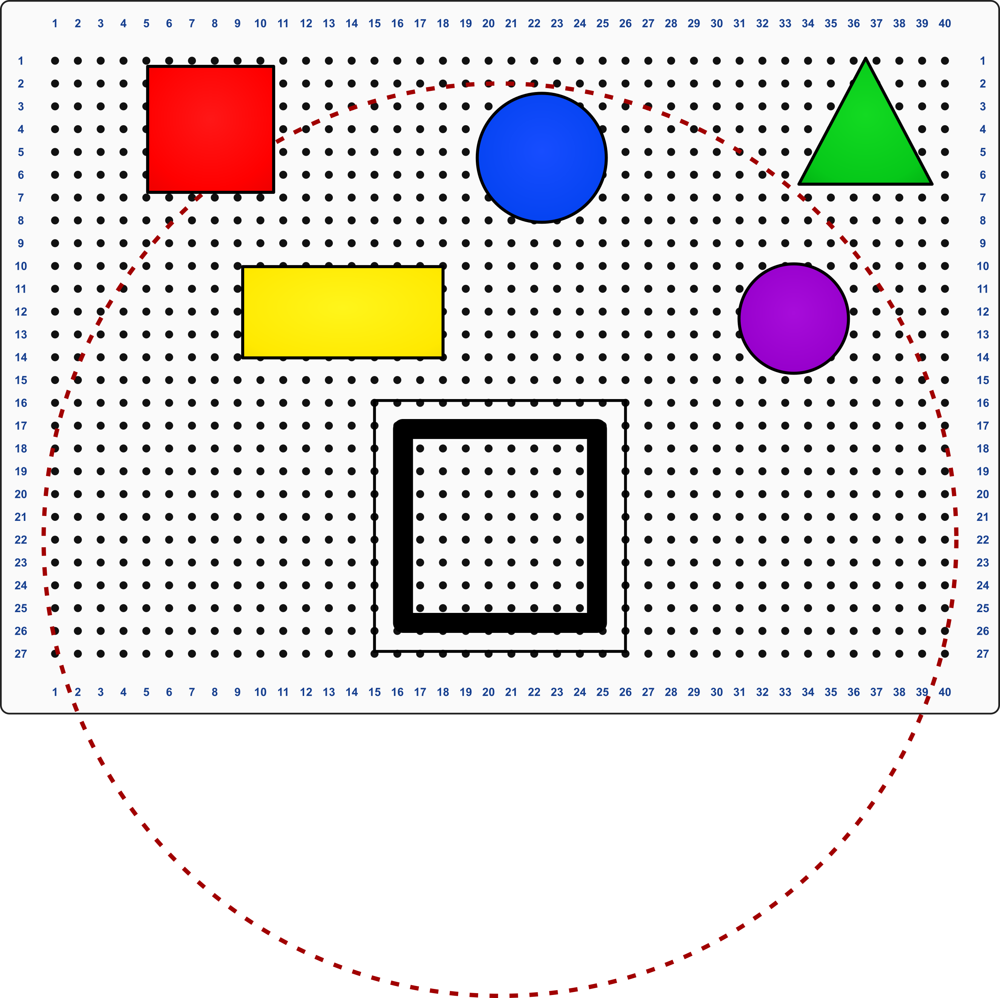
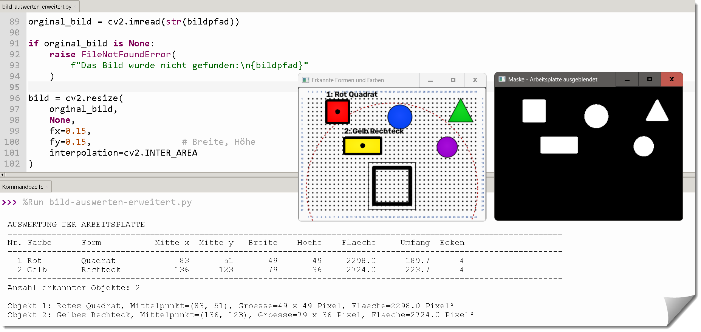
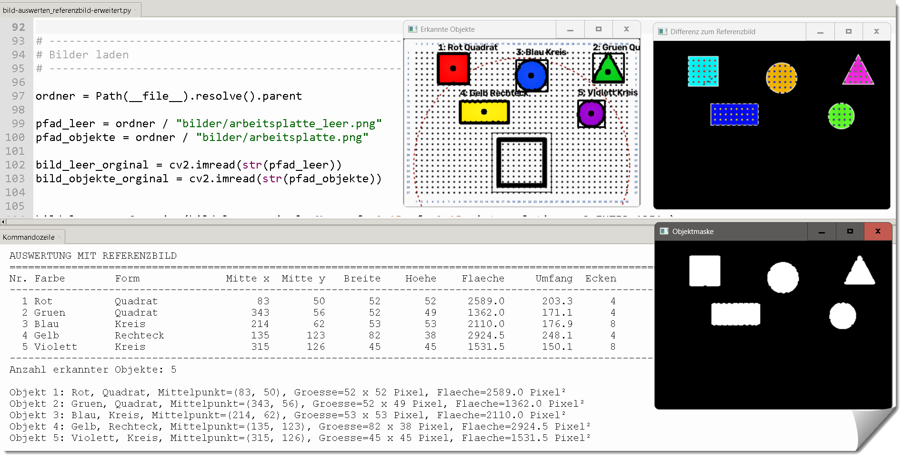
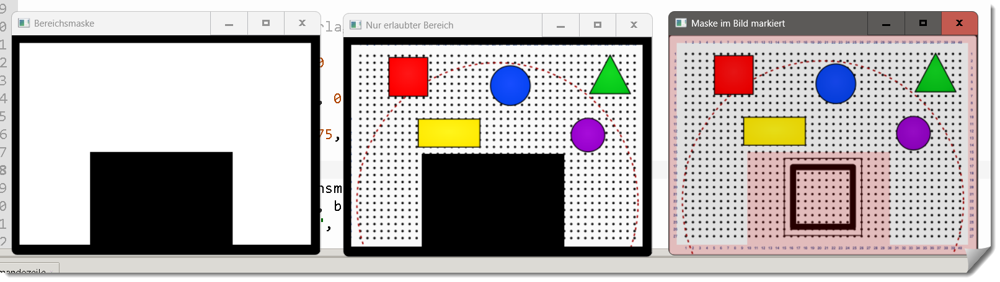

Experimente mit OpenCV und Formen auf der Arbeitsplatte - zweidimensional
Wir untersuchen, in wie weit das Bild der Arbeitsplatte die Erkennung der Formen beeinträchtigt.
Es verfügt über eine transparente Hintergrundebene mit Arbeitsplatte und Ebenen für die
- Formen,
- Containerstellplätze,
- Beschriftungen und Bemassungen.
Daraus kann das Bild der Arbeitsplatte mit den Formen in verschiedenen Varianten erzeugt werden, um die Erkennung mit verschiedenen Bildgrößen und Grafikformaten zu testen.
Wir nutzen das Bildbearbeitungsprogramm GIMP.

arbeitsplatte.svg / leer.png / mit_Objekte.png
Erkennung ohne Referenzbild
Der erste Test mit dem Bild der Arbeitsplatte und den darauf liegenden Formen zeigt, dass die Erkennung der Formen nicht zuverlässig funktioniert.
bild-auswerten-erweitert.py
Erkennung mit Referenzbild
Durch die Verwendung eines Referenzbildes ist die Erkennung der Formen wesentlich zuverlässiger.
bild-auswerten_referenzbild-erweitert.py
Nutzung von Bereichsmasken
Durch die Verwendung von Bereichsmasken kann der Erkennungsbereich gezielt eingegrenzt werden.
bereichsmaske.py